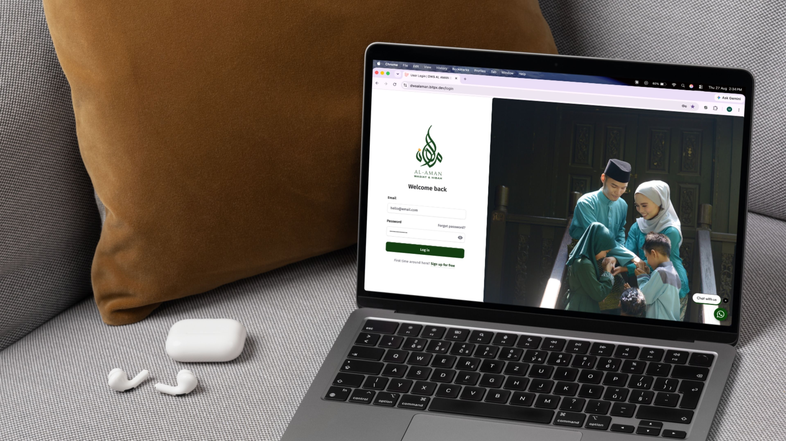
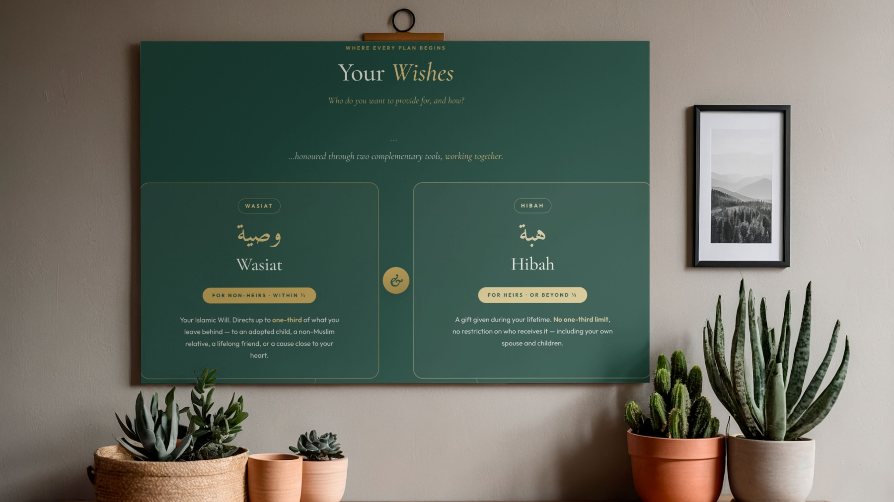
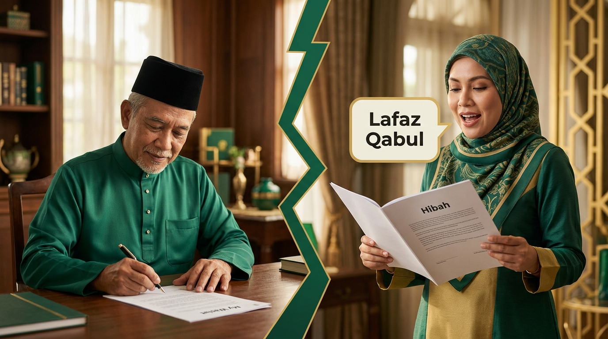

Perjalanan berpandu — dari hasrat kepada perancangan yang teguh.
Perancangan Legasi Islam tidak sepatutnya terasa seperti kerja kertas. Inilah cara Al-Aman memandu anda melaluinya — dengan orang sebenar dan pengawasan sebenar di sebalik setiap cadangan.
Setiap perancangan legasi keluarga Muslim dibina daripada tradisi yang sama, tetapi tiada dua perancangan yang serupa. Sebuah Wasiat menunaikan hasrat tertentu. Sebuah Hibah menunaikan yang lain. Kadangkala satu sudah memadai. Kadangkala kedua-duanya diperlukan. Mengetahui yang mana sesuai untuk keluarga anda — dan menyusunnya dengan betul — itulah kerjanya.
Al-Aman dibina untuk menjadikan kerja itu jelas, teliti, dan milik anda. Inilah cara kami memandu anda.
Ceritakan tentang anda
Kami mulakan dengan perbualan, bukan borang. Siapa dalam keluarga anda. Apa yang telah anda bina. Apa yang anda hasratkan berlaku apabila anda tiada lagi untuk menyatakannya sendiri. Tiada jawapan yang salah — hanya kejelasan yang cukup untuk mengetahui apa yang perancangan anda perlukan.

Lihat dua jalan anda
Kami jelaskan — dengan jelas, dalam bahasa anda sendiri — apa yang boleh Wasiat lakukan untuk situasi anda, dan di mana Hibah berperanan. Bukan sebagai dua produk berasingan, tetapi sebagai dua alat dalam satu perancangan. Anda akan faham dengan tepat apa yang setiap satu meliputi, dan bila kedua-duanya diperlukan.

Bina perancangan anda, dipandu
Anda pilih apa yang sesuai untuk keluarga anda — Wasiat sahaja, atau Wasiat bersama Hibah. Kami draf dokumen bersama anda, langkah demi langkah, menyemak setiap keputusan berdasarkan rangka Syariah yang direka oleh Sarah Ali & Co. Tanpa istilah rumit. Tanpa titik buta. Jika ada sesuatu yang tidak selesa, kami berhenti.
Tandatangan, isytiharkan, dan tenanglah
Setelah perancangan anda siap, anda lengkapkan dua perkara. Pertama, tandatangan Wasiat bercetak anda dengan saksi. Kemudian, Lafaz Qabul anda — pengisytiharan yang dirakam yang memberikan Wasiat anda kekuatan yang sewajarnya. Sebagai sebahagian daripada perancangan anda, Global Asset Trustee dilantik sebagai wasi sokongan anda (tanpa kos), yang mengambil alih jika wasi utama anda tidak mampu atau tidak sanggup berkhidmat. Tiada yang tergantung di rak. Tiada yang menunggu untuk ditemui. Perancangan anda hidup dari hari anda selesai.

Apabila hari itu tiba — dan ia akan tiba, untuk kita semua — keluarga anda tidak sepatutnya meneka-neka ketika mereka sedang berduka. Hasrat anda sudah tersurat di atas kertas, hitam putih. Seorang pemegang amanah profesional bersedia sebagai wasi sokongan anda (wasiyy). Inilah legasi yang berbaloi untuk ditinggalkan.
✦ ✦ ✦Bersedia untuk bermula?
Ambil langkah pertama. Tiada obligasi, tiada tekanan — hanya perbualan berpandu tentang apa yang keluarga anda sebenarnya perlukan.
Mulakan Perancangan Anda